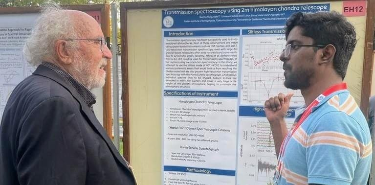
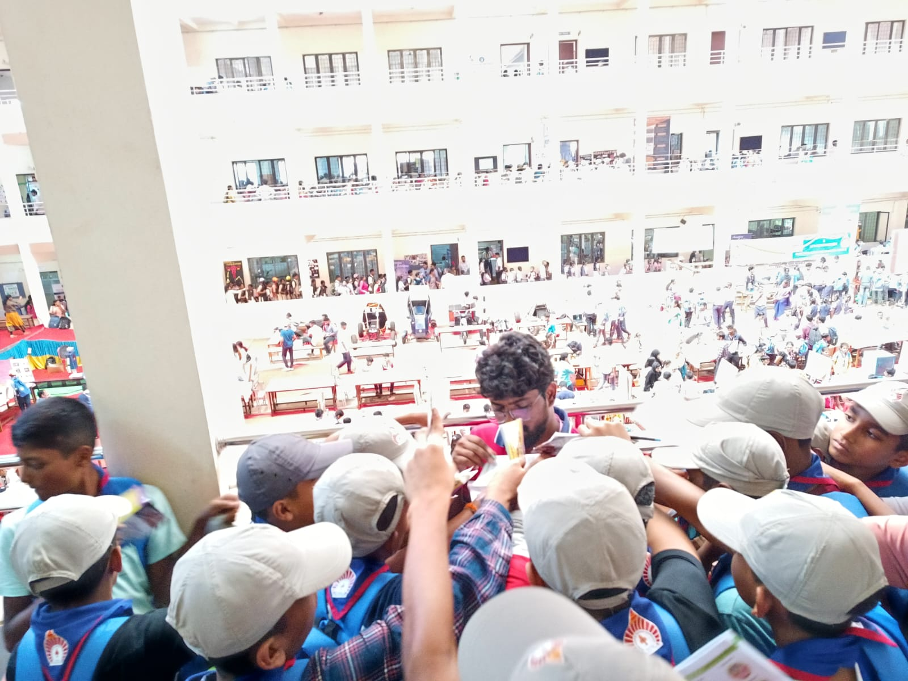
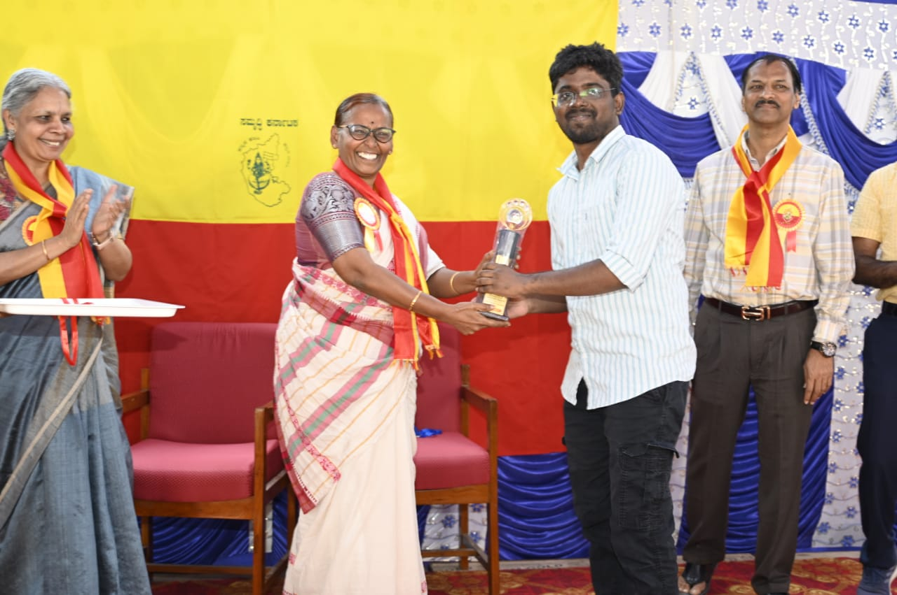

A collection of moments, places, observations, conferences, travels and experiences that have shaped my journey.

A Memorable Scientific Moment
I had the opportunity to interact with Prof. Michel Mayor, Nobel Laureate and co-discoverer of the first exoplanet orbiting a Sun-like star, during a conference at the Physical Research Laboratory (PRL), Ahmedabad.
I presented my first observed transit light curve of WASP-33b and discussed my work on exoplanet transmission spectroscopy. It was especially memorable to share My early observational results with someone whose pioneering work helped establish the field of exoplanet research.
I also received the Best Poster Award at the same conference as a graduate student.

Connecting Astronomy with Young Minds
Interacting with school students as part of a science outreach Program in Mudbidri, Karnataka.
One of the most rewarding parts of being a researcher is having the opportunity to share the excitement of science and astronomy with young minds.

IIA Chess Championship
A memorable moment from the IIA Chess Championship 2025, Receiving the championship trophy from my PhD supervisor, Prof. Sivarani Thirupathi.
Chess has been one of my favorite pursuits outside of research, and winning the championship was a particularly special achievement.

Early Career Research Award
Receiving the Early Career Research Award at the 6th Indian Planetary Science Conference (IPSC 2025) and the S2-STEP 2025 conference at Indian Institute of Technology Roorkee.
The award recognised my poster presentation on in-situ atmospheric dispersion measurements at the Hanle site, an important part of my work on understanding and characterizing atmospheric dispersion for precision ground-based spectroscopy.

A Place I Enjoyed
A few words about the place.

Another Chapter
Every photograph carries a small story.